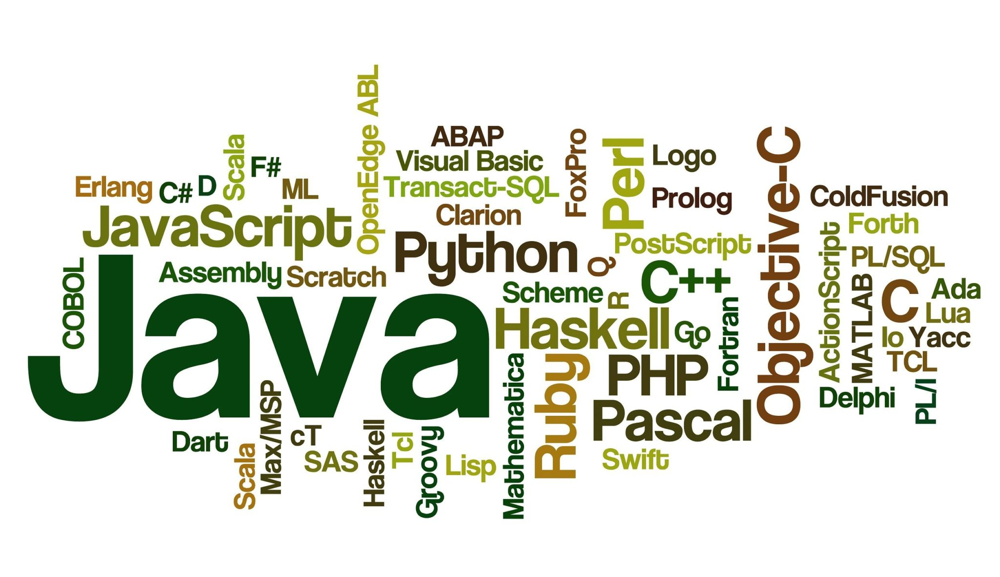
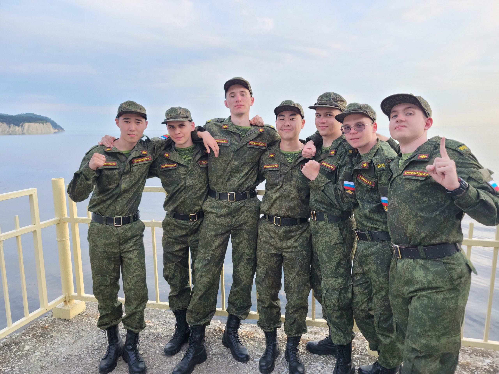

В ВУЗе мне нравятся профильные технические предметы, например, изучение языков программирования, базы данных, архитектуры ЭВМ и т. п.

Так меня интересует и обучение военной специальности. Это очень интересно изучать военную науку. Кроме того, в ВУЦе прививают такие качества, как дисциплинированность, сдержанность, уважение.
